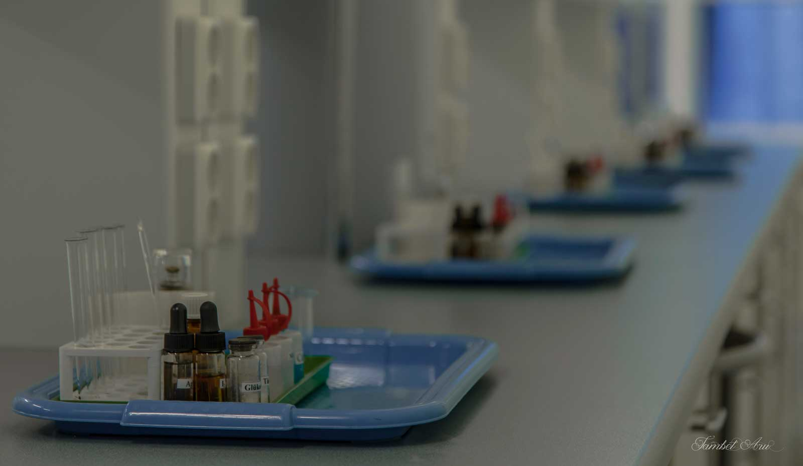

Technology will continually be developed improving monitoring, maneuverability and endurance of drone technology. Additions such as vision-based navigation with complex cameras will improve autonomous operation. Future developments include miniaturized batteries to increase flight time over and above the existing low fuel capacity. As technology progresses, drones will surpass earth boundaries and enter space.
RESEARCH
With drone technology, researchers are able to observe environments otherwise unapproachable by humans, and they are able to conduct tasks faster than any human could. Scientists use drone technology in many applications, including wildlife management and the exploration of extreme environments including the arctic poles, volcanoes, and locations with extreme weather events such as hurricanes or tornadoes.

WILDLIFE MANAGEMENT
Drones give a view of the environment, particularly in difficult to access areas. They can perform specific desired tasks, such as sensing weeds and applying herbicide treatments to invading species. Perhaps most notable, drones have demonstrated their ability to track endangered species and disrupt the illegal activities of poachers.

CASE STUDY: STOPPING POACHING
Drones are helping the global effort to stop elephant and rhinoceros poachers by tracking herd patterns and predicting the behavior of animal and poacher alike. In 2014 alone, Twenty thousand elephants, desired for their ivory, were poached in Africa. Drones are slowly but surely helping to alleviate this devastating issue.
LEARN MORESCIENTIFIC RESEARCH

Drones can go into extreme environments that no man could enter. Drones are able to study such opposite extremes as Turrialba Volcano near San Jose, Costa Rica and Terra Nova Bay, Antarctic. Researchers now have access to data otherwise unavailable to them.
CASE STUDY: TURRIABLA VOLCANO
Poisonous gases spewing from Turrialba Volcano in Costa Rica previously made this location unapproachable; however, drone technology allows access, and measurements are used to calibrate satellite readings. Similarly, frigid jet winds in Terra Nova Bay, Antarctic made this location inaccessible. Data collected by drones help scientists understand sea ice formation.

DISTURBING WILDLIFE
Drones entering wildlife habitat disturb the animals startled by the noise and unusual sight of a foreign object. Drones were demonstrated to have disturbed herds of wildlife in Zion National Park and studies conducted in Minnesota demonstrated stress on the bear population.
SOLUTION: RESEARCHER COLLABORATION
In the northwest Minnesota, a study was conducted on 4 black bears using heart rate monitors. The monitors recorded increased heart rates with the presence of drones for each animal upon encountering the drone, indicating stress. The study shows strong evidence that care must be taken to study but not disturb local wildlife populations. Researchers and conservationists must collaborate to form agreed upon rules of conduct for wildlife studies.
LEARN MOREFAA RESTRICTIONS
Federal Aviation Administration (FAA) has many restrictions on what kinds of UAVs can be flown and where. They must ensure that aircraft is flown without risk to other aircraft and property. One must be granted a certification in order to fly a drone, and this can take up to 2 years. Certifications are not allowed over cities or crowded spaces and only allow a 20-mile area of operation.
SOLIUTION: MODIFYING THE RULES
Though the reigns are tight on UAVs, change is imminent as long as deadly accidents continue to be unseen. Appeals for modifications to the FAA rules would allow more research, and pressures to compete globally will likely lead to the FAA embracing new and expanded uses of drones and reducing regulations within reason.

IMPROVING TECHNOLOGY
DRONES CAN EXPLORE SPACE
With all the technological improvements for drones advancing at a rapid pace, drones will one day be in space. Now they require an atmosphere to fly, but NASA intends to one day have drones on Mars.